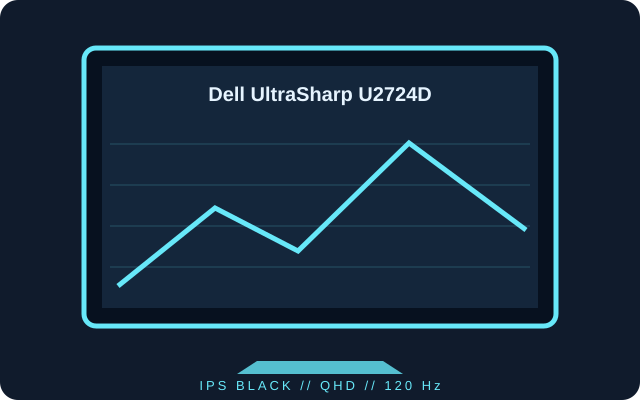

[ INDIVIDUAL COMPONENT // DISPLAYS ]
Dell UltraSharp U2724D
A 27-inch QHD IPS Black productivity monitor with a 120 Hz panel and USB hub.

IDENTIFICATION: Confirm U2724D (not U2724DE) on the rear label; the adjacent model has different networking and Thunderbolt features.
Specifications
| Catalog subcategory | LCD displays |
|---|---|
| Exact product | Dell UltraSharp U2724D |
| Panel and native resolution | 27-inch IPS Black LCD, 2560 × 1440 (16:9) |
| Native refresh | Up to 120 Hz at native resolution; maximum timing depends on input and host |
| Luminance / contrast | 350 cd/m² typical; 2000:1 typical |
| Inputs / companion ports | DisplayPort 1.4, HDMI 2.1 TMDS, USB-C upstream data, USB-A / USB-C hub ports; USB-C host charging is up to 15 W |
| Stand / VESA | Height, tilt, swivel and pivot adjustment; 100 × 100 mm VESA mounting |
| Power / compatibility | 100–240 V AC, 50/60 Hz input. Typical operating power is about 25.7 W. Use a host output and certified cable capable of the selected 2560 × 1440 / 120 Hz timing. |
Preservation notes
Record the complete label, firmware, input, cable, selected refresh rate and supplied stand. The USB-C upstream connection is a data/hub connection with limited charging, not a 90 W laptop power source.
Manufacturer documentation and sources
- Dell — UltraSharp U2724D product specificationsManufacturer product listing and published features.
- Dell Support — U2724D manuals and documentationSetup, connectivity, safety and regulatory documentation for the model.